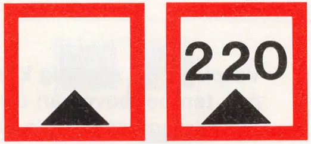
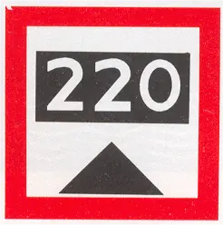
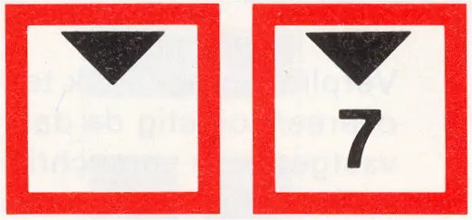
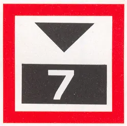
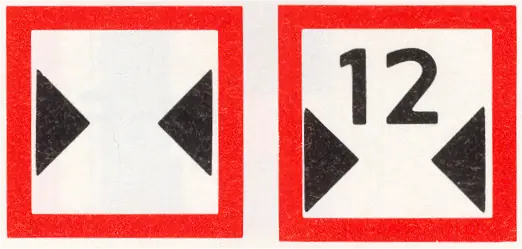
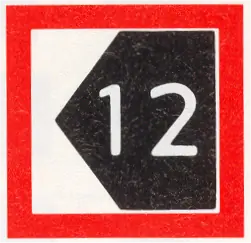

C. BEPERKINGSTEKENS
Opmerking
Deze tekens kunnen worden aangevuld of verduidelijkt met bijkomende tekens, vermeld onder F
C.1 | Beperkte waterdiepte; eventueel de beschikbare diepte aangegeven in centimeters |   |
C.2 | Beperkte doorvaarthoogte; eventueel de beschikbare doorvaarthoogte aangegeven in meters* |   |
C.3 | Beperkte breedte van doorvaart of vaarwater; eventueel de beschikbare breedte aangegeven in meters |  |
C.4 | Vaartbeperkingen; vraag nadere inlichtingen | |
C.5 | Het vaarwater bevindt zich op enige afstand van de oever; het op het bord voorkomende getal geeft in meters de afstand aan die de schepen uit de oever dienen te blijven, gerekend vanaf het bord |  |
* De maat waarmede de hoogte is verminderd kan worden vermeld op een onderbord (Zie voorbeeld bij F.3)